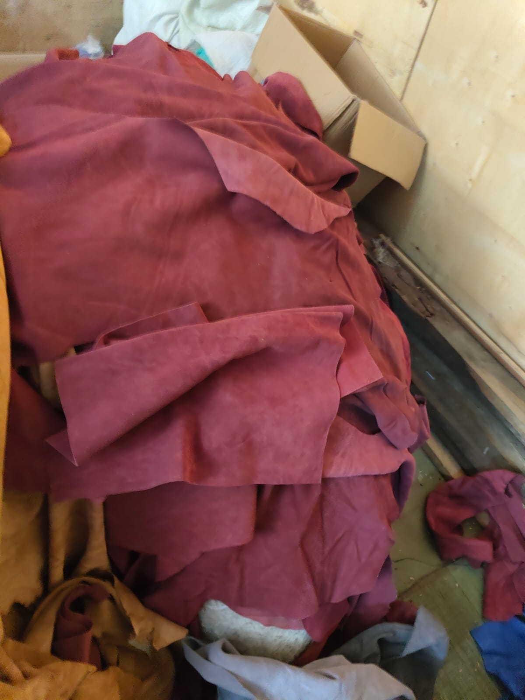
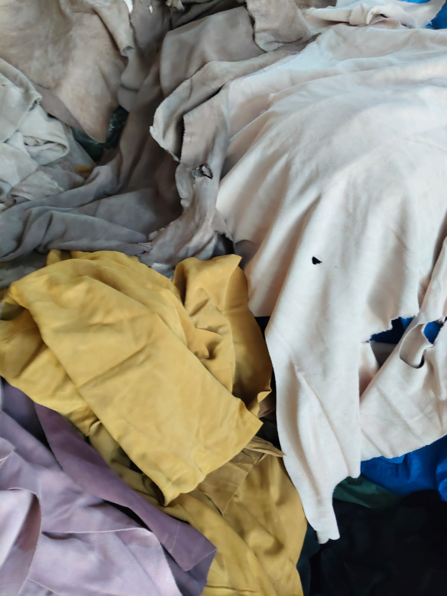
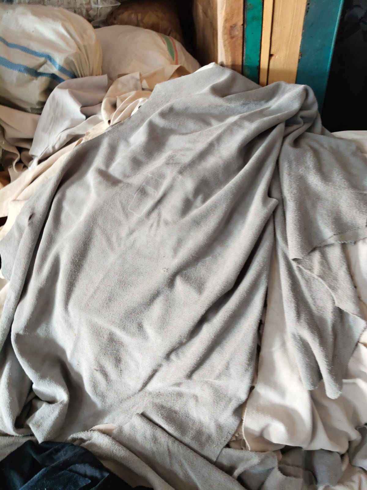
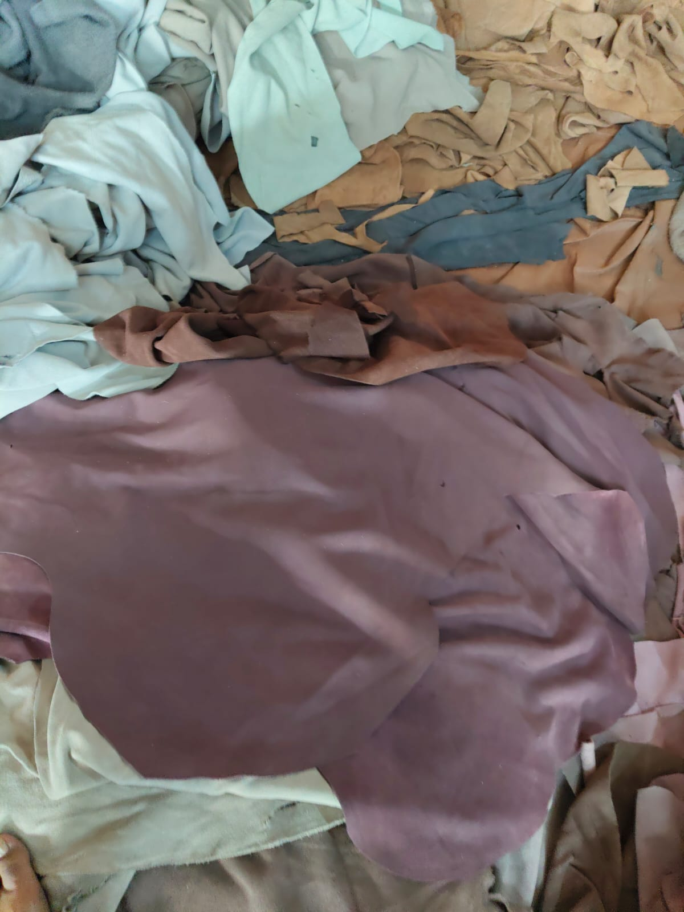
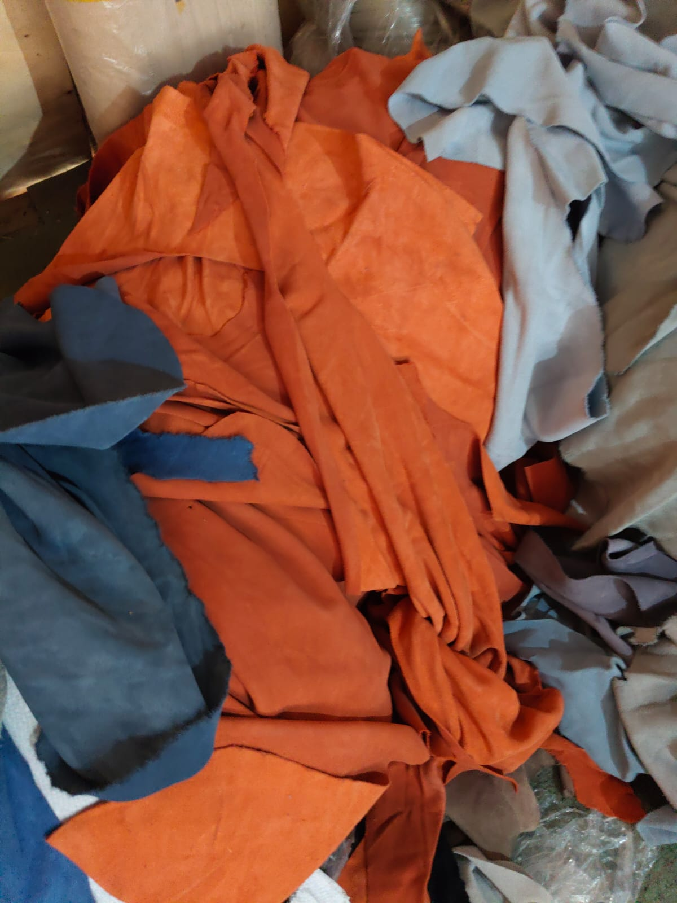

Scrap Kain Perca
Sisa potongan kain dari produksi garmen, diolah warga menjadi isian kasur, bantal, dan pakaian rumahan.
Kami menghubungkan pabrik garmen dan korporasi besar dengan masyarakat desa: sisa produksi dikelola dengan rapi, lalu diolah menjadi kasur, bantal, dan pakaian rumahan yang bermanfaat.

Legalitas resmi
NIB 0220105371839
CV Mugi Berkah Jaya adalah Industri Kecil Menengah (IKM) di sektor pengolahan limbah dan tekstil. Kami mengumpulkan serta mengelola limbah sisa produksi, seperti kain perca, dari korporasi dan pabrik garmen besar.
Limbah itu tidak berakhir sebagai sampah. Warga desa kami berdayakan untuk mengolahnya kembali menjadi peralatan rumah tangga: kasur, bantal, dan pakaian rumahan. Pabrik terbantu mengelola limbah, warga mendapat penghasilan, lingkungan lebih terjaga.
Nomor Induk Berusaha (NIB)
0220105371839
Terdaftar resmi sebagai usaha IKM/UMKM
Masyarakat desa terlibat langsung dalam pengolahan dan mendapat penghasilan.
Sisa produksi kembali ke siklus pakai sebagai kasur, bantal, dan pakaian rumahan.
Limbah industri dikelola, bukan dibuang atau dibakar sembarangan.
Kerja sama dengan pabrik garmen dan korporasi untuk pengelolaan scrap berkelanjutan.
Lima kategori limbah industri yang bisa Anda serahkan kepada kami. Hubungi kami untuk volume, jadwal, dan mekanisme pengambilan.
Sisa potongan kain dari produksi garmen, diolah warga menjadi isian kasur, bantal, dan pakaian rumahan.
Potongan dan sisa kulit dari industri alas kaki, tas, dan barang kulit lainnya.
Limbah PVC sisa produksi industri yang dikumpulkan dan dikelola agar tidak mencemari lingkungan.
Sisa besi dari pabrik dan kegiatan produksi, siap dikumpulkan dalam jumlah besar.
Limbah logam non-besi bernilai tinggi dari industri, kami terima untuk dikelola dan dikembalikan ke rantai daur ulang.
Dokumentasi proses kami, dari pemilahan limbah hingga produk jadi buatan warga desa.




Punya limbah industri yang perlu dikelola? Kirim pesan, kami balas melalui WhatsApp.